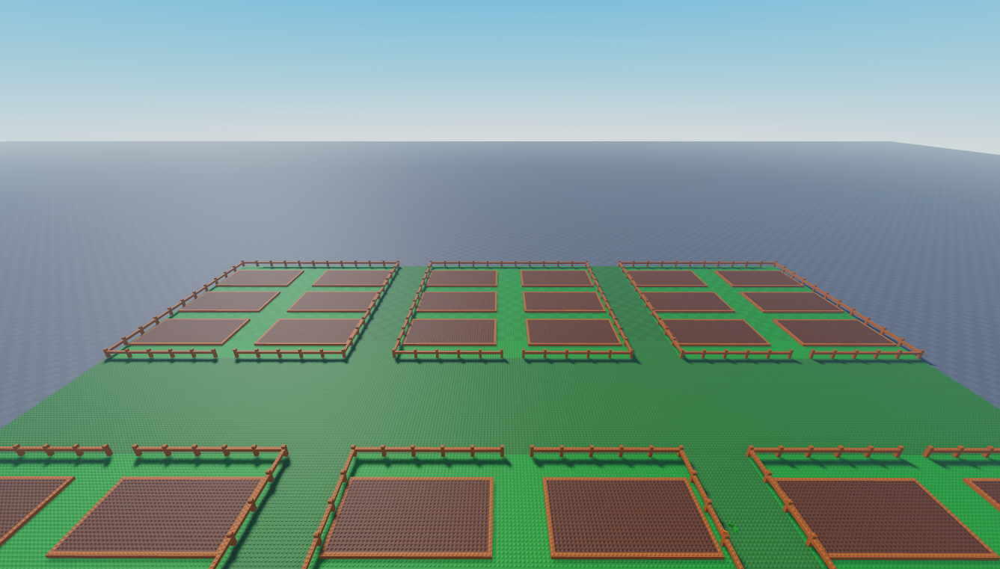
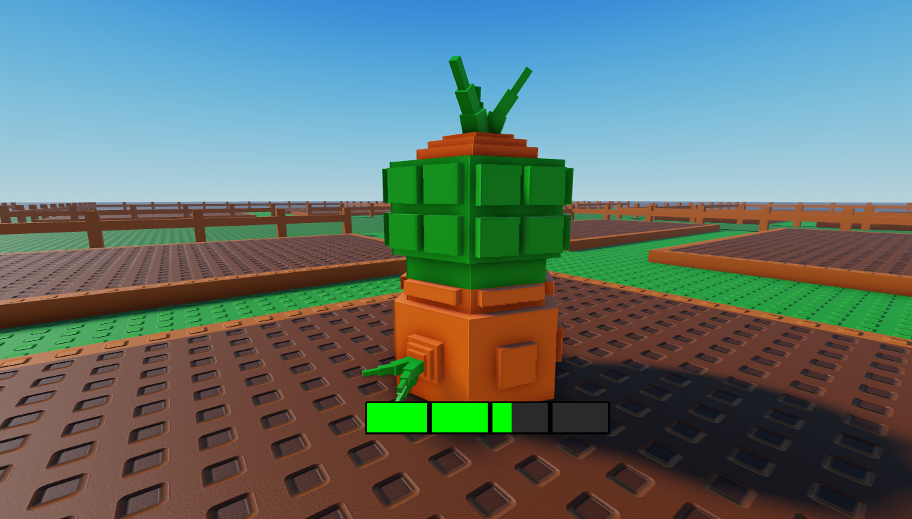

Garden Wars

Game Overview
As a player, you begin Garden Wars as a humble farmer. You quickly realize there is much more to the crops you are growing. Yes, they are delicious but, there is a twist. They can be used as weapons! You can stay a humble farmer and build your fortune the honest way or you can enter into the arena where you can show you skill against other players. If you are able to best your enemy, they will drop some valuables they have with them on the ground for you to loot! BUT, be careful because if the enemy bests you, you will lose all the valuables you have with you. Ready to get down and dirty in Garden Wars?
Farming Gameplay
You will start with low level crops which will allow you to obtain weapons and ammunition. The more you grow the more you will be able to sell and obtain better crops. Better crops will allow you to put up more of a fight in the arena.
Arena Gameplay
After you feel comfortable with your grown arsenal, you can try your luck in the arena. In here you will be put up against other players. If you defeat the enemy you will obtain a reward but, if you lose the mistakes may be costly.
Progression System
Garden Wars follows a unique progression system. You can either progress lineraly growing plants from a low to high level or you can try to skip ahead by performing in the arena. Which will you chose?
Gardens
Upon entering the game, the player will be assigned their own unique garden. With this garden, the player may do as they wish and grow what they want. Other player will also have gardens in the same game but, will not be able to interact with other player's gardens. Eventually the gardens will have the functionality to save your plant progress in between sessions. This functionality will also allow plants to grow while the player is offline! This will provide a more realistic and less grindy feel for some of the more rare and high level plants which may take a while to grow.

Plants
There will be many types of plants in Garden Wars. This will allow the player options that support their combat style! Plants may have different growth stages and growth times allowing the player to choose between quick and dirty or patient and strategic.

Gallery